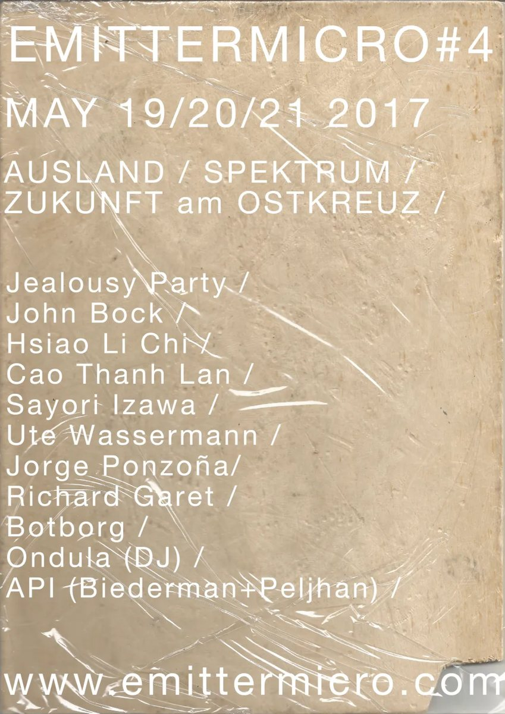
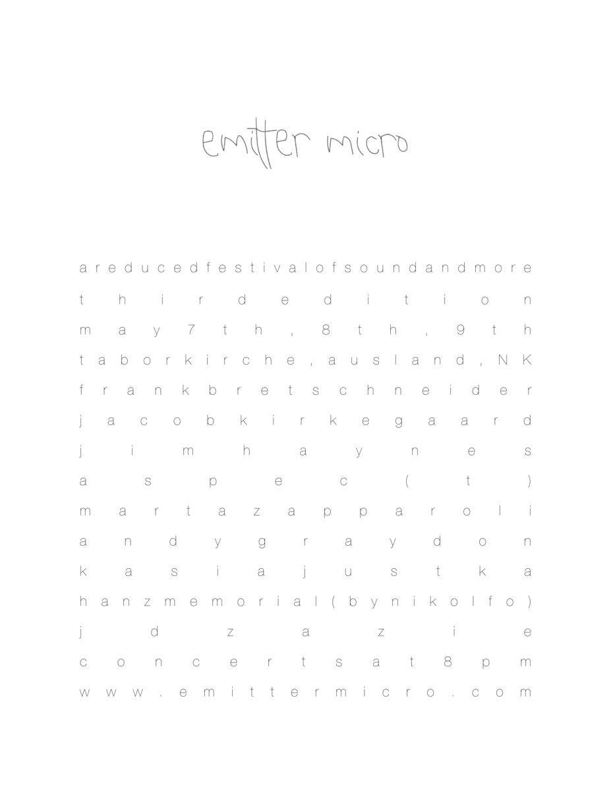

emitter micro
A label and festival co-curated with Pierce Warnecke and Seiji Morimoto. Festival artists have included Francisco López, Kim Cascone, Peter Cusack and Jacob Kirkegaard, with editions at Ausland, Spektrum, Taborkirche, KM28 and Petersburg Art Space (#6, 2023), and an emitter night at the Kontakte festival at Akademie der Künste (2019). Releases come out on vinyl, cassette and digital, distributed through Staalplaat and Bandcamp.
- emitter micro #4, 201719 to 21 May · Ausland, Spektrum, Zukunft am Ostkreuz · Jealousy Party, John Bock, Hsiao Li Chi, Cao Thanh Lan, Sayori Izawa, Ute Wassermann, Jorge Ponzoña, Richard Garet, Botborg, Ondula (DJ), API (Biederman + Peljhan)
- emitter micro 20157 to 9 May · a reduced festival of sound and more, co-curated with NK and Ausland · Taborkirche Kreuzberg: Jacob Kirkegaard, aspec(t), Marta Zapparoli · Ausland: Frank Bretschneider, Andy Graydon, Kasia Justka · NK Project: Jim Haynes, Hanzmemorial (by Niko Lfo), Jd Zazie
- emitter micro 20139 to 11 May · Musikinstrumenten-Museum: Phill Niblock, Thomas Ankersmit · Naherholung Sternchen: Jochen Arbeit + Hopek Quirin, Seiji Morimoto, Schneider TM + KPTMichigan + Mek Obaam, Tapedances (Rinus van Alebeek + Barbara Lazara), Gandoola Oond Krapoola (DJ) · Ausland: Kim Cascone, Peter Cusack, Louis Laurain, Udo Noll

